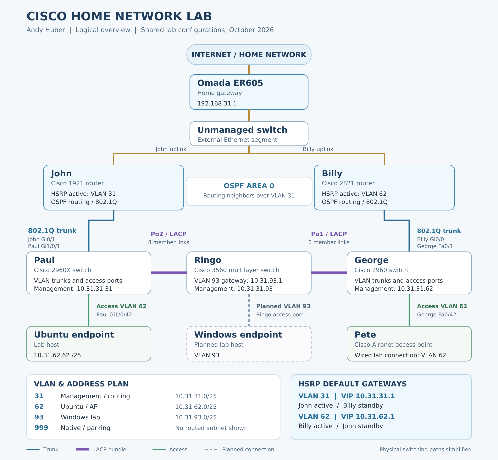

Biography · Résumé · Projects
Welcome! This is where I will share my background, interests, and professional goals.
My background combines regulated financial operations with hands-on Cisco networking lab experience.
I built a physical Cisco lab to develop hands-on skills in routing, switching, and troubleshooting. It includes Cisco 1921 and 2821 routers and 2960X, 2960, and 3560 switches.
Click the diagram to view it at full size.
